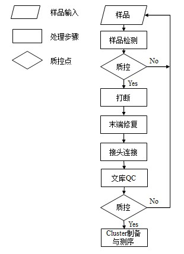
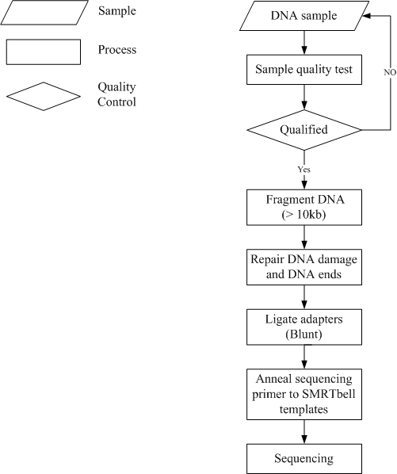
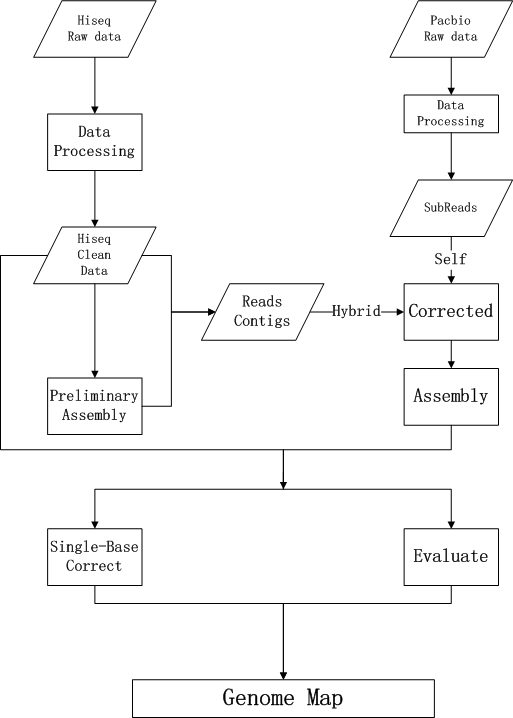
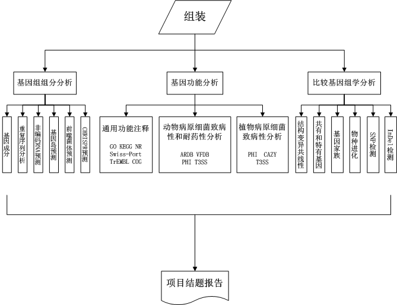

2技术简介
2.1产品说明
小基因组Denovo测序项目是对小基因组(质粒、病毒、线粒体等)测序后从头组装。步骤为先将染色体DNA机械地随机切割成一定相对分子质量范围的片段，分别构建不同的测序文库，然后进行Illumina平台与PacBio平台大规模测序。最后基于PacBio测序数据、Illumina 测序数据，采用基因组组装软件分析，把目标基因组序列完整的组装出来。
2.2 实验简介
2.2.1 Illumina Hiseq 4000平台
提取基因组DNA并随机打断，电泳回收所需长度的DNA片断，并加上接头进行cluster制备，最后上机测序。下面为建库方法和测序流程的详细描述。

图2-1 实验流程 DNA样品被接收后，对样品进行检测；然后用检测合格的样品构建文库：首先采用超声法Covaris或者Bioruptor将大片段DNA(如基因组DNA、BAC或长片段PCR产物)随机打断并产生某长度DNA片段，然后用T4 DNA Polymerase、Klenow DNA Polymerase和T4 PNK将打断形成的粘性末端修复成平末端，再通过3' 端加碱基“A”，使得DNA片段能与3' 端带有“T”碱基的特殊接头连接，用电泳法选择需回收的目的片段连接产物，再使用PCR技术扩增两端带有接头的DNA片段；最后，用合格的文库进行cluster制备和测序
2.2.2 Pacbio RSII平台
实验过程中每个步骤（如样品检测、文库构建、测序等）都将影响数据的质量和数量，进而直接影响信息分析结果。为了得到高度可信的测序数据，我们在实验的每个步骤进行严格的质量控制。文库准备方法、测序过程如下图2：

Figure 2-2 PacBio experimental process. Pipeline of PacBio experiment. DNA is treated into fragments with proper size by g-TUBE at first. Then the fragments are damage repaired and ends repaired. Both sides of DNA fragments are respectively connected with hairpin adapter to get a dumbbell (set of horse ring) structure, which is known as SMRTbell. After annealing, the SMRTbell is fixed at the bottom of the ZWM polymerase, it will be used for sequencing at last.
2.3信息分析简介
2.3.1细菌完成图组装分析说明
细菌完成图组装分为基因组检测、完成图组装两个过程，分析流程详细如下图所示。

图2-3 细菌完成图分析流程图
（1）基因组检测：此阶段目的在于通过生物信息方法快速地获得目标菌株的基因组信息和样品情况，包括目标菌株的基因组大小、GC含量、重复序列情况、质粒情况、非一致序列情况等信息。
（2）完成图组装：此阶段就是把目标菌株的基因组序列完整的组装出来，即达到完成图水平。基于目标菌株基因组的复杂性，可能需要使用多种平台数据和多种组装软件对序列进行组装和优化。
2.3.2菌株生物信息分析说明
基于组装结果进行信息分析。下面为信息分析内容的详细描述。

图2-4 信息分析流程图 (1)基因组组分分析，包括(a)重复序列分析：包括串联重复序列以及小卫星序列、微卫星序列分析；(b)CRISPR预测；(c)非编码RNA预测：包括rRNA、tRNA和sRNA；(d)基因岛预测；(e)前噬菌体预测；(f)基因成分；(2)基因功能分析，包括(a)通用功能注释：使用GO、KEGG和Swiss-Prot，以及NR和COG数据库对预测获得的ORF区域进行功能注释；(b)动物病原菌致病性和耐药性分析：包括三型分泌系统效应蛋白预测，PHI、VFDB、ARDB数据库注释；(c)植物病原菌致病性分析：包括三型分泌系统效应蛋白预测，CAZy、PHI数据库注释；(3)比较基因组分析，包括 (a)结构变异（共线性分析）；(b)共有基因和特有基因分析；(c)物种进化分析，包括构建系统进化树；(d)基因家族分析；(4)撰写结题报告。
3信息分析结果
3.1 数据概况
3.1.1 Illumina Hiseq 4000平台数据
原始数据过滤统计：
| Sample Name | Insert Size (bp) | Reads Length (bp ) | Raw Data (Mb) | Adapter (%) | Duplication (%) | N(%) | Filtered Reads (%) | Low Quality Filtered Reads (%) | Clean Data (Mb) |
| B37 | 500 | 90:90 | 1,336.14 | 0.759 | 0.073 | 0.008 | 18.20 | 9.986 | 1,093 |
| ACA_DC | 500 | 90:90 | 1,336.14 | 0.759 | 0.073 | 0.008 | 18.20 | 9.986 | 1,093 |
Clean Data 碱基组成和质量分布图：
结果目录：Separate/Sample name/1.Cleandata/
3.2 基因组概况
3.2.1组装结果统计
基于Pacbio RSII数据与Illumina Hiseq 4000数据，采用基因组组装软件分析，各样品菌株组装统计如下表：
| Sample Name | Chromosome Number (#) | Total Length (bp) | N50 Length (bp) | N90 Length (bp) | Max Length (bp) | Min Length (bp) | GC Content (%) |
| B_39 | 1 | 9,477,630 | 9,477,630 | 9,477,630 | 9,477,630 | 9,477,630 | 68.84 |
| ACA_DC | 42 | 2,829,733 | 1,530,041 | 24,887 | 1,530,041 | 620 | 39.78 |
4帮助文档
4.1分析方法描述
4.1.1数据过滤
4.1.1.1 Illumina Hiseq 4000 平台
原始测序数据
测序得到的原始图像数据经base calling转化为序列数据，我们称之为raw data或raw reads，结果以FASTQ文件格式存储，包含reads的序列以及碱基的测序质量。在FASTQ格式文件中每个read由四行描述，如下：
@A80GVTABXX:4:1:2587:1979#ACAGTGAT/1
NTTTGATATGTGTGAGGACGTCTGCAGCGTCACCTTTATCGGCCATGGT
+
BTTMKZXUUUdddddddddddddddddddddddddddadddddd^WYYU
每个序列共有4行，第1行和第3行是序列名称（有的fq文件为了节省存储空间会省略第三行“＋”后面的序列名称），由测序仪产生；第2行是序列；第4行是序列的测序质量，每个字符对应第2行每个碱基，第四行每个字符对应的ASCII值减去64，即为该碱基的测序质量值，比如c对应的ASCII值为99，那么其对应的碱基质量值是35。从Illumina GA Pipeline v1.5开始，碱基质量值范围为2到41.表4-1 为Illumina HiSeq 4000测序错误率与测序质量值简明对应关系。如果测序错误率用E表示，碱基质量值用sQ表示，则有下列关系：
4.1.2 基因组组装
4.1.2.1完成图组装
完成图序列的组装主要基于Pacbio RSII 数据与Illumina Hiseq 4000数据，采用各种基因组组装软件分析，组装出样品中主要的完整的连续的contig，然后在基于得到的contig做单碱基纠正、成环判断等分析，最终得到可信的完成图序列或是染色体水平的contig序列，具体步骤如下：
（1）初步组装评估基因组：使用多种短序列组装软件对处理后的Illumina Hiseq 4000 reads数据进行组装，初步检测基因组大小、GC含量、重复序列情况、质粒情况、非一致序列情况等信息。
（2）Pacbio RSII数据组装构建基本骨架：使用SMRT Analysis v2.3.0 流程中的RS_HGAP Assembly3组装基因组。并且判断是否完整的连续的组装出基因组主要的contig，如果没有组装出主要的contig，将借助Illumina Hiseq 4000数据与Pacbio RSII数据混合组装，进一步纠正Subreads、优化参数等，直到组装出基因组主要的contig。
（3）Contig碱基纠正：利用两轮分析方法对contig进行单碱基纠错。第一轮纠错方法利用Illumina Hiseq 4000数据，采用soapSNP与soapIndel软件对得到的contig进行第一轮纠错分析；第二轮纠错方法也是基于Illumina Hiseq 4000数据，然后采用GATK分析流程来进行纠错分析。
（4）Contig成环处理：采用多种方法判断Contig是否成环，第一种首先判断Contig两端是否已经有overlap，如果有overlap进一步验证成环区域是否可信；第二种采用SSPACE- LongRead软件基于Pacbio RSII数据中Subreads或corrected reads来判断是否成环；第三种如果样品存在比较近源的基因组，可以利用参考序列辅助判断是否成环。
（5）完成图判断：如果Contig判断成环将得到完成图水平的完整序列，如果Contig判断不成环并且已验证物种基因组为环形将只能得到染色体水平完整序列，最后对完整序列做评估分析。
组装结果统计示例：
| Sample Name | Chromosome Number (#) | Total Length (bp) | N50 Length (bp) | N90 Length (bp) | Max Length (bp) | Min Length (bp) | GC Content (%) |
| B_39 | 1 | 9,477,630 | 9,477,630 | 9,477,630 | 9,477,630 | 9,477,630 | 68.84 |
| ACA_DC | 42 | 2,829,733 | 1,530,041 | 24,887 | 1,530,041 | 620 | 39.78 |
上面统计表各列含有如下：
1）Sample Name：该样品的名称；
2）Chromosome Number（#）：该样品染色体数目；
3）Total Length（bp）：该样品组装结果总长度；
4）N50 Length（bp）：该样品组装结果N50长度；
5）N90 Length（bp）：该样品组装结果N90长度；
6）Max Length（bp）：该样品组装结果中最长染色体长度；
7）Min Length（bp）：该样品组装结果中最短染色体长度；
8）GC Content（%）：该样品组装结果序列GC含量；
4.2软件及数据库
软件：SMRT Analysis v2.2.0
相关网站：https://github.com/PacificBiosciences/SMRT-Analysis/wiki/SMRT-Pipe-Reference-Guide-v2.3.0
软件：Celera Assembler[1]
相关网站：http://sourceforge.net/projects/wgs-assembler/files/wgs-assembler/wgs-8.3/
软件：Meraculous[2]
相关网站：ftp://ftp.jgi-psf.org/pub/JGI_data/meraculous/
软件：SOAPsnp[3]
相关网站：http://soap.genomics.org.cn/soapsnp.html
软件：SOAPIndel
相关网站：http://soap.genomics.org.cn/soapindel.html
软件：GATK
相关网站：http://www.broadinstitute.org/gatk/
软件：SSPACE- LongRead[4]
相关网站：www.baseclear.com/bioinformatics-tools/.
软件：Tandem Repeats Finder[8]；版本：4.04
相关网站：http://tandem.bu.edu/trf/trf.html
常用参数设置：2 7 7 80 10 50 2000 -d -h
软件：RNAmmer[9]；版本：1.2
相关网站：http://www.cbs.dtu.dk/services/RNAmmer/
常用参数设置：–s Species –m Type –gff *. rRNA.gff –f *.rRNA.fq
软件：tRNAscan-SE[10]；版本：1.3.1
相关网站：http://gtrnadb.ucsc.edu/
常用参数设置设置：–Spec_tag(BAOG) –o *.tRNA –f *.tRNA.structure
数据库：Rfam[11]；版本：9.1
相关网站：http://rfam.sanger.ac.uk/
常用参数设置：–p blastn –W 7 –e 1 –v 10000 –b 10000 –m 8 –i subfile –o *.blast.m8
4.3名称解释
SMRT®Cells: Consumable substrates comprising arrays of zero-mode waveguide nanostructures. SMRT®Cells are used in conjunction with the DNA Sequencing Kit for on-instrument DNA sequencing
SMRTbell™ template: A double-stranded DNA template capped by hairpin adapters (i.e., SMRTbell™ adapters) at both ends. A SMRTbell™ template is topologically circular and structurally linear, and is the library format created by the DNA Template Prep Kit.
Zero-Mode Waveguide: A nanophotonic device for confining light to a small observation volume that can be, for example, a small hole in a conductive layer whose diameter is too small to permit the propagation of light in the wavelength range used for detection.
Insert Size: The length of the double-stranded nucleic acid fragment in a SMRTbell template,excluding the hairpin adapteRS II.
Polymerase Reads : A sequence of nucleotides incorporated by the DNA polymerase while reading a template, such as a circular SMRTbell™ template. Polymerase reads are most useful for quality control of the instrument run. Polymerase read metrics primarily reflect movie length and other run parameters rather than insert size distribution. Polymerase reads are trimmed to include only the high quality region; they include sequences from adapters; and can further include sequence from multiple passes around a circular template.
Subread: Each polymerase read is partitioned to form one or more subreads, which contain sequence from a single pass of a polymerase on a single strand of an insert within a SMRTbell™ template and no adapter sequences. The subreads contain the full set of quality values and kinetic measurements. Subreads are useful for applications like de novo assembly, resequencing, base modification analysis, and so on.
Clean Data（reads）：即下机数据经过去接头污染、过滤低质量reads、去duplication（针对大片段数据）之后，实际用于组装及分析的数据。
BLASR: Used for targeted sequencing. Maps reads against a reference; part of SMRT® Analysis.
Celera® Assembler: Combines Pacific Biosciences’ long reads with short reads generated by other technologies. Used for de novo assembly. Third party software integrated with the SMRT® Analysis suite.
GATK: Identifies haploid and diploid SNPs using the Broad’s Unified Genotyper software.
N50/N90：将组装所得片段（Scaffold/Contig）按照从长到短排序并累加求和，累加值达到基因组总长度一半时的片段长度即是该组装结果的N50值，通常用来衡量组装情况；N90与之类似，即累加长度为基因组总长。
4.4参考文献
[1] Istrail et al. (2004) Whole-Genome Shotgun Assembly and Comparison of Human Genome Assemblies. PNAS 101 1916-1921.
[2] Chapman JA, Ho I, Sunkara S, Luo S, Schroth GP, et al. (2011) Meraculous: De Novo Genome Assembly with Short Paired-End Reads. PLoS ONE 6(8): e23501. doi:10.1371/journal.pone.0023501
[3] Li R, Li Y, et al (2009). SNP detection for massively parallel whole-genome resequencing. Genome Res. published online May 6, 2009 , doi:10.1101/gr.088013.108
[4] Boetzer M, Henkel CV, Jansen HJ, Butler D and Pirovano W. 2010. Scaffolding pre-assembled contigs using SSPACE. Bioinformatics. 27(4):578-579
[5] A.L. Delcher, D. Harmon, S. Kasif, O. White, and S.L. Salzberg (1999) Improved microbial gene identification with GLIMMER, Nucleic Acids Research 27:23 4636-4641.
[6] S. Salzberg, A. Delcher, S. Kasif, and O. White (1998) Microbial gene identification using interpolated Markov models, Nucleic Acids Research 26:2, 544-548.
[7] Delcher AL， Bratke KA， Powers EC，et al（2007）. Identifying bacterial genes and endosymbiont DNA with Glimmer. Bioinformatics, 23(6):673-679.
[8] G. Benson(1999). Tandem repeats finder: a program to analyze DNA sequences. Nucleic Acids Research, Vol. 27, No. 2, pp. 573-580.
4.5常用数据格式介绍
FASTQ格式
Fastq文件举例如下：
read1的fastq文件 x1.fq中第一条reads：
@FC4290FAAXX:4:1:3:84#CAGATC/1
CCAACTATGATAGCCAANAAGGGAAAGCCATAGAG
+
abb_aab_aa`a^aba^D[`a_`aaaa`_a_`__a
read2的fastq文件 x2.fq中第一条reads：
@FC4290FAAXX:4:1:3:84#CAGATC/2
CGAAAGCTAGTGCTAAAGAAAACAATTTATATTTCATAAAATTG
+
ab`baa``aa_ba`aaa`aa`b_a^aa`a_aa`a`aa`a_aa_^
格式说明如下：
| 行数 | 说明 |
| 1 | @Reads ID |
| 2 | 碱基序列 |
| 3 | + Reads ID （Reads ID可省略） |
| 4 | 碱基质量 |
FASTA格式
FASTA格式（又称为Pearson格式），是一种基于文本用于表示核苷酸序列或氨基酸序列的格式。在这种格式中碱基对或氨基酸用单个字母来编码，且允许在序列前添加序列名及注释。序列文件的第一行是由大于号">"或分号";"打头的任意文字说明（习惯常用">"作为起始），用于序列标记。从第二行开始为序列本身，只允许使用既定的核苷酸或氨基酸编码符号。通常核苷酸符号大小写均可，而氨基酸常用大写字母。如：
>scaffold1 35.9
AACTCCAAATGTTTTACATCCTTTTTTTATCCATAATATATAATCAACTGATATACAAAATGAAAAAATACTACCTACATTTTTATTAGGCTTATTTTATTAAAATAAGGTTGGTGTTGTGGAAATAGCCATTCT
4.6分析结果文件列表
|-- Large project number_subproject code
| |-- Abstract
| | |-- assembly.xls [组装结果统计文件]
| | |-- hiseqcleandata.xls [Hiseq 数据统计文件]
| |--Separate/
| | |--Sample name/
| | | |--1.Cleandata/ [过滤后的数据]
| | | | |--*_Clean.1.fq.gz [Hiseq Cleandata read1文件]
| | | | |--*_Clean.2.fq.gz [Hiseq Cleandata read2文件]
| | | | |--*_Clean.base.png [Hiseq reads处理后碱基分布图]
| | | | |--*_Clean.qual.png [Hiseq reads处理后碱基质量分布图]
| | | | |--*.Hiseq_Cleandata.xls [Hiseq Clean data 统计文件]
| | | |--2.Assembly/ [基因组组装结果]
| | | | |--*.genome.fa [组装结果序列文件]
| | | | |--*.ass_stat.xls [组装结果统计文件]
| | | | |-- ncRNA_finding/ [非编码RNA的预测结果]
| | | | | |--*.ncRNA.stat.xls [非编码RNA的预测结果统计]
| | | | | |-- *.tRNA [tRNAscan的初始预测结果]
| | | | | |-- *.tRNA.gff [tRNA预测结果的GFF3格式文件]
| | | | | |-- *.tRNA.structure [tRNA的二级结构文件]
| | | | | |-- *.denovo.rRNA.fa [rRNAmmer预测得到的rRNA的序列]
| | | | | |-- *.denovo.rRNA.gff [rRNAmmer预测得到的rRNA的gff3格式文件]
| | | | | |-- *.homology.rRNA.tab [同源比对预测rRNA得到的Blast比对结果]
| | | | | |-- *.homology.rRNA.gff [同源比对预测rRNA得到的gff3格式文件]
| | | | | |-- *.sRNA.cmsearch.all.gff [sRNA预测得到的原始结果]
| | | | | |-- *.sRNA.cmsearch.confident.gff [sRNA预测根据阈值筛选后得到的结果]
| | | | | |-- *.sRNA.cmsearch.confident.nr.gff [sRNA去冗余后的最终结果]